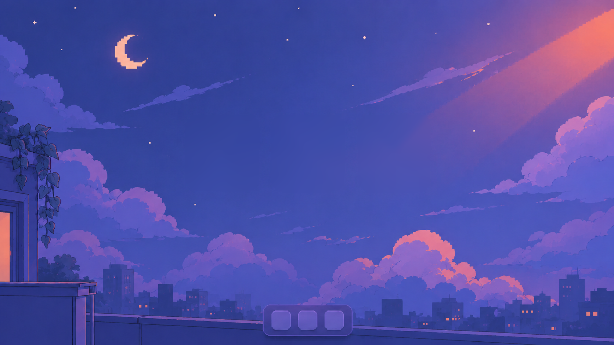

Armo Design. Gonzalo, UX/UI Designer. Portfolio
Click or press any key to power on
Click to power on
Skip intro

z
z
z
Be
Behance
in
LinkedIn
@
Mail
File
View
Help
Welcome to Gonzalo OS
Double-click a project to open it.
x